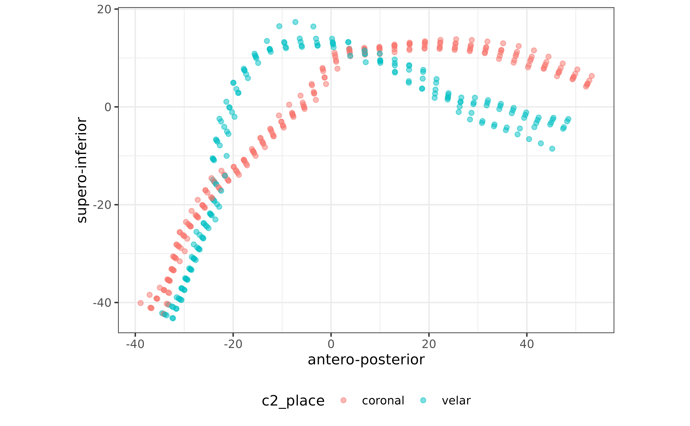

Import and plot spline data from AAA
Stefano Coretta
2025-02-08
Source:vignettes/tongue-imaging.Rmd
tongue-imaging.RmdThe package rticulate facilitates UTI data import and
plotting with spline data exported from Articulate Assistant Advanced
(AAA). To use the package, load it as usual.
Import spline data
The function read_aaa() can quickly import spline data
and transform it into the long format (where each observation is a point
on a fan line and the coordinates values are two variables,
X and Y, see ?tongue for more
details).
To correctly import AAA data, it is required that the file exported
from AAA does not contain the header. This must be supplied as an
argument to the read_aaa() function. We thus create a
character vector with a concatenation of column names as strings.
columns <- c(
"speaker",
"seconds",
"rec_date",
"prompt",
"label",
"TT_displacement",
"TT_velocity",
"TT_abs_velocity",
"TD_displacement",
"TD_velocity",
"TD_abs_velocity"
)Now we can use read_aaa() to import the spline data as a
tibble. The function requires a string with the file path and name, and
a vector with the names of the columns.
# system.file() is needed here because the example files reside in the package.
# You can just include the file path directly in read_aaa, like
# read_aaa("~/Desktop/splines.tsv", columns)
file_path <- system.file("extdata", "it01.tsv", package = "rticulate")
tongue <- read_aaa(file_path, knots = 42, column_names = columns)## Rows: 11 Columns: 95
## ── Column specification ────────────────────────────────────────────────────────
## Delimiter: "\t"
## chr (4): speaker, rec_date, prompt, label
## dbl (91): seconds, TT_displacement, TT_velocity, TT_abs_velocity, TD_displac...
##
## ℹ Use `spec()` to retrieve the full column specification for this data.
## ℹ Specify the column types or set `show_col_types = FALSE` to quiet this message.
## ! Column `Date Time of recording` not found. Did not create a `displ_id` column.
## We recommend to include `Date Time of recording` when exporting data from AAA.To check the head of the tibble, just do:
tongue## # A tibble: 462 × 16
## speaker seconds rec_date prompt label TT_displacement TT_velocity
## <chr> <dbl> <chr> <chr> <chr> <dbl> <dbl>
## 1 it01 1.20 29/11/2016 15:11:03 Dico p… max_… 77.9 -7.73
## 2 it01 1.20 29/11/2016 15:11:03 Dico p… max_… 77.9 -7.73
## 3 it01 1.20 29/11/2016 15:11:03 Dico p… max_… 77.9 -7.73
## 4 it01 1.20 29/11/2016 15:11:03 Dico p… max_… 77.9 -7.73
## 5 it01 1.20 29/11/2016 15:11:03 Dico p… max_… 77.9 -7.73
## 6 it01 1.20 29/11/2016 15:11:03 Dico p… max_… 77.9 -7.73
## 7 it01 1.20 29/11/2016 15:11:03 Dico p… max_… 77.9 -7.73
## 8 it01 1.20 29/11/2016 15:11:03 Dico p… max_… 77.9 -7.73
## 9 it01 1.20 29/11/2016 15:11:03 Dico p… max_… 77.9 -7.73
## 10 it01 1.20 29/11/2016 15:11:03 Dico p… max_… 77.9 -7.73
## # ℹ 452 more rows
## # ℹ 9 more variables: TT_abs_velocity <dbl>, TD_displacement <dbl>,
## # TD_velocity <dbl>, TD_abs_velocity <dbl>, knot <dbl>, spline <chr>,
## # X <dbl>, Y <dbl>, frame_id <int>Sometimes is useful to add extra information for each prompt (like
vowel, consonant place, phonation, etc.). We can do so by using
functions from the dplyr package (word() is
from the stringr package).
stimuli <- read_csv(system.file("extdata", "stimuli.csv", package = "rticulate"))## Rows: 12 Columns: 11
## ── Column specification ────────────────────────────────────────────────────────
## Delimiter: ","
## chr (10): word, ipa, c1, c1_phonation, vowel, anteropost, height, c2, c2_pho...
## dbl (1): item
##
## ℹ Use `spec()` to retrieve the full column specification for this data.
## ℹ Specify the column types or set `show_col_types = FALSE` to quiet this message.
tongue <- mutate(tongue, word = word(prompt, 2)) %>%
left_join(y = stimuli) %>%
mutate_if(is.character, as.factor)## Joining with `by = join_by(word)`Let’s check tongue again.
tongue## # A tibble: 462 × 27
## speaker seconds rec_date prompt label TT_displacement TT_velocity
## <fct> <dbl> <fct> <fct> <fct> <dbl> <dbl>
## 1 it01 1.20 29/11/2016 15:11:03 Dico p… max_… 77.9 -7.73
## 2 it01 1.20 29/11/2016 15:11:03 Dico p… max_… 77.9 -7.73
## 3 it01 1.20 29/11/2016 15:11:03 Dico p… max_… 77.9 -7.73
## 4 it01 1.20 29/11/2016 15:11:03 Dico p… max_… 77.9 -7.73
## 5 it01 1.20 29/11/2016 15:11:03 Dico p… max_… 77.9 -7.73
## 6 it01 1.20 29/11/2016 15:11:03 Dico p… max_… 77.9 -7.73
## 7 it01 1.20 29/11/2016 15:11:03 Dico p… max_… 77.9 -7.73
## 8 it01 1.20 29/11/2016 15:11:03 Dico p… max_… 77.9 -7.73
## 9 it01 1.20 29/11/2016 15:11:03 Dico p… max_… 77.9 -7.73
## 10 it01 1.20 29/11/2016 15:11:03 Dico p… max_… 77.9 -7.73
## # ℹ 452 more rows
## # ℹ 20 more variables: TT_abs_velocity <dbl>, TD_displacement <dbl>,
## # TD_velocity <dbl>, TD_abs_velocity <dbl>, knot <dbl>, spline <fct>,
## # X <dbl>, Y <dbl>, frame_id <int>, word <fct>, item <dbl>, ipa <fct>,
## # c1 <fct>, c1_phonation <fct>, vowel <fct>, anteropost <fct>, height <fct>,
## # c2 <fct>, c2_phonation <fct>, c2_place <fct>Plot splines
To plot splines from a spline data frame, use
plot_tongue(). This function is a wrapper of a
ggplot call (from the ggplot2 package). The
coordinates must be in two variables named X and
Y. read_aaa() creates them automatically while
importing the raw data.
plot_tongue(tongue)## `geom_smooth()` using formula = 'y ~ x'
You can also easily filter the tibble with the filter()
function from dplyr.
filter(tongue, label == "max_TD") %>%
plot_tongue()## `geom_smooth()` using formula = 'y ~ x'
You can specify geom options and aesthetics in the usual
ggplot way (remember to load the package with
library(ggplot2) if you need this). geom
options are arguments of plot_tongue(), while aesthetics
can be called with aes().
plot_tongue(tongue, alpha = 0.5) +
aes(group = rec_date, colour = c2_place) +
theme(legend.position = "bottom")## `geom_smooth()` using formula = 'y ~ x'
To plot points instead of splines, use
plot_tongue(geom = "point").
plot_tongue(tongue, geom = "point", alpha = 0.5) +
aes(group = rec_date, colour = c2_place) +
theme(legend.position = "bottom")
Finally, if you want to plot the palate profile, you can do so by specifying a data frame with the coordinates for the palate spline.
palate <- read_aaa(system.file("extdata", "it01-palate.tsv", package = "rticulate"), knots = 42, column_names = columns)## Warning: One or more parsing issues, call `problems()` on your data frame for details,
## e.g.:
## dat <- vroom(...)
## problems(dat)## Rows: 1 Columns: 95
## ── Column specification ────────────────────────────────────────────────────────
## Delimiter: "\t"
## chr (3): speaker, rec_date, prompt
## dbl (55): seconds, TT_displacement, TT_velocity, TT_abs_velocity, TD_displac...
## lgl (37): label, X1 NA, Y1 NA, X2 NA, Y2 NA, X3 NA, Y3 NA, X4 NA, Y4 NA, X5 ...
##
## ℹ Use `spec()` to retrieve the full column specification for this data.
## ℹ Specify the column types or set `show_col_types = FALSE` to quiet this message.
## ! Column `Date Time of recording` not found. Did not create a `displ_id` column.
## We recommend to include `Date Time of recording` when exporting data from AAA.
filter(tongue, label == "max_TD") %>%
plot_tongue(palate = palate, alpha = 0.5) + aes(group = rec_date)## `geom_smooth()` using formula = 'y ~ x'
## `geom_smooth()` using formula = 'y ~ x'## Warning: Removed 18 rows containing non-finite outside the scale range
## (`stat_smooth()`).
Import multiple files
To import multiple files with AAA data, simply use a list of paths
with read_aaa, for example using
list.files.
tongue2 <- list.files(
path = system.file("extdata", package = "rticulate"),
pattern = "*\\d{2}.tsv",
full.names = TRUE
) %>%
read_aaa(., knots = 42, column_names = columns)## Rows: 11 Columns: 95
## ── Column specification ────────────────────────────────────────────────────────
## Delimiter: "\t"
## chr (4): speaker, rec_date, prompt, label
## dbl (91): seconds, TT_displacement, TT_velocity, TT_abs_velocity, TD_displac...
##
## ℹ Use `spec()` to retrieve the full column specification for this data.
## ℹ Specify the column types or set `show_col_types = FALSE` to quiet this message.
## ! Column `Date Time of recording` not found. Did not create a `displ_id` column.
## We recommend to include `Date Time of recording` when exporting data from AAA.
##
## Rows: 8 Columns: 95
## ── Column specification ────────────────────────────────────────────────────────
## Delimiter: "\t"
## chr (4): speaker, rec_date, prompt, label
## dbl (91): seconds, TT_displacement, TT_velocity, TT_abs_velocity, TD_displac...
##
## ℹ Use `spec()` to retrieve the full column specification for this data.
## ℹ Specify the column types or set `show_col_types = FALSE` to quiet this message.
## ! Column `Date Time of recording` not found. Did not create a `displ_id` column.
## We recommend to include `Date Time of recording` when exporting data from AAA.We can now plot splines for both speakers.
plot_tongue(tongue2, alpha = 0.5) +
aes(group = rec_date) +
facet_grid(. ~ speaker)## `geom_smooth()` using formula = 'y ~ x'